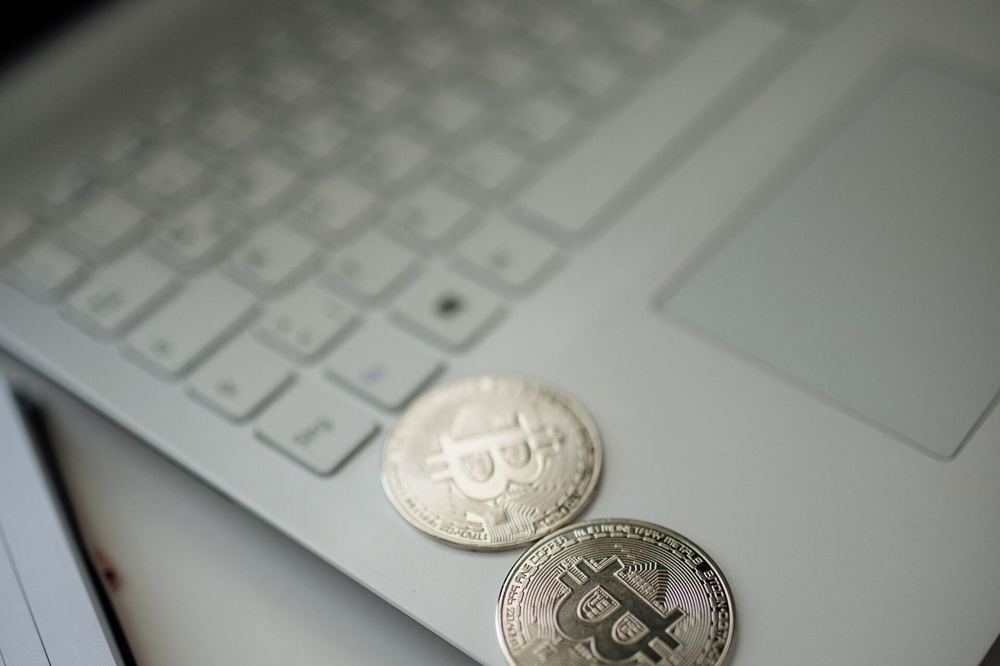

How to Invest in Cryptocurrency Safely in 2026
A no-hype guide to investing in cryptocurrency safely in 2026: how to avoid scams, size your position, and pick exchanges that won't burn you.
Z Zar · 02 May 2026 · 5 min read

Photo: Shixart1985, CC BY 2.0, Wikimedia Commons

Part of our Complete Investing Guide
Cryptocurrency is no longer fringe. It's in retirement accounts, on the balance sheets of publicly traded companies, and regulated (to varying degrees) by governments worldwide. Whether you're curious about a small allocation or just trying to understand what your colleagues keep talking about, the question in 2026 isn't whether crypto is real. It's how to approach it without getting burned.
This guide focuses on the "safely" part of that question. The technology is fascinating. The volatility is real. The scams are abundant. Getting those three things in the right order is what separates people who invest in crypto from people who lose money in crypto.
Step 1: Understand What You're Actually Buying
Crypto is not a single asset class. The term covers thousands of projects ranging from well-established to outright fraudulent. Before putting any money in, understand what you own.
Bitcoin (BTC) is the original and dominant cryptocurrency by market cap. It has a fixed supply of 21 million coins, no central issuer, and a decade-plus track record. Institutionally, it's increasingly treated as "digital gold": a store of value and inflation hedge, not a payment system.
Ethereum (ETH) is the second-largest by market cap and the foundation for most decentralized applications, smart contracts, and the NFT/DeFi ecosystem. More complex than Bitcoin, with different risk and use-case profiles.
Everything else ("altcoins") ranges from legitimate projects with actual use cases to outright scams. The failure rate among altcoins is extraordinarily high. The vast majority of coins that existed in 2017 are worth near zero today. Treat anything outside the top 10–20 coins as highly speculative.
Step 2: Size Your Position Correctly
The most important rule in crypto investing: only allocate what you can afford to lose entirely without affecting your financial plan.
A common framework from financial planners who do allow crypto exposure: 1–5% of total investable assets, maximum. At 5%, a 70% crash in crypto (which has happened multiple times) reduces your total portfolio by only 3.5%, painful but not catastrophic. At 30% allocation, the same crash cuts your portfolio nearly in half.
| Crypto Allocation | Portfolio Impact of 70% Crypto Crash | Risk Level |
|---|---|---|
| 1% | -0.7% portfolio | Conservative |
| 5% | -3.5% portfolio | Moderate |
| 10% | -7% portfolio | Aggressive |
| 30% | -21% portfolio | Very high risk |
Whatever percentage you choose, build your core portfolio first: emergency fund, retirement accounts, index funds. Crypto is a speculative satellite, not a foundation.
If you haven't built that core yet, start there. Our three-fund portfolio guide outlines the low-cost index fund foundation that should come before any speculative allocation.
Step 3: Choose a Regulated, Reputable Exchange
Most crypto losses from exchange failures were entirely preventable. The collapse of FTX in 2022 wiped out billions in customer funds held on an unregulated exchange with opaque accounting. Use regulated, audited exchanges with a track record.
Coinbase: the largest US-regulated crypto exchange, publicly traded (COIN), FDIC-insured for USD balances, SOC 2 certified. The safest on-ramp for US investors.
Kraken: well-established, regulated in multiple jurisdictions, strong security track record. Good option for investors who want more trading pairs than Coinbase offers.
Fidelity Crypto: if you're already a Fidelity customer, their crypto offering lets you hold Bitcoin and Ethereum with the same account security as your brokerage. Convenient for investors who prefer not to use a dedicated crypto exchange.
Bitcoin ETFs: since January 2024, spot Bitcoin ETFs trade on US exchanges (BlackRock's IBIT, Fidelity's FBTC, etc.). This is the lowest-friction way to get Bitcoin exposure inside a regular brokerage account, with no wallet management required. Expense ratios range from 0.15–0.25%.
Step 4: Understand Custody and Security
"Not your keys, not your coins" is the crypto maxim. When your crypto sits on an exchange, you have a claim on the exchange's balance sheet, not direct ownership of the coins. If the exchange fails, your funds may be locked or lost (as FTX customers discovered).
For small allocations (under $10,000), exchange custody at a regulated platform like Coinbase is a reasonable tradeoff. For larger amounts, a hardware wallet (Ledger, Trezor) stores your private keys offline, completely outside any third-party's control. The tradeoff is that you become solely responsible for not losing the keys.
Never share your seed phrase with anyone, ever. This is the single most common way people lose crypto to scams. No legitimate exchange, project, or support agent will ever ask for your seed phrase.
Step 5: Know the Tax Rules Before You Trade
In the US, crypto is treated as property by the IRS. Every sale, swap, or use of crypto to purchase something is a taxable event. Holding Bitcoin for a year and selling at a gain? That's long-term capital gains. Selling after less than a year? Short-term, taxed as ordinary income.
The record-keeping burden is significant if you trade frequently. Every transaction needs to be tracked: purchase price, date, sale price, date. Software like CoinTracker or Koinly syncs with your exchange accounts and generates the tax reports you'll need for Form 8949.
For investors who hold crypto alongside traditional investments, understanding how your overall portfolio fits together is important: our guide on dividend ETFs for passive income covers the income-generating side of a balanced portfolio as context for where crypto fits (or doesn't).
Scams to Avoid in 2026
Crypto scams have become sophisticated. The most common in 2026:
- Pig butchering scams: long-term romantic or social media relationships that end with the "friend" convincing you to invest on a fake platform. Billions lost annually. If someone online introduces you to a crypto investment opportunity, it's almost certainly a scam.
- Fake exchange/wallet apps: look-alike apps that steal your credentials. Only download exchanges from official websites, never from links in emails or messages.
- Rug pulls: new tokens promoted heavily, then the developers drain the liquidity pool and disappear. Avoid any token without a verifiable team, audited code, and lock on developer funds.
- "Guaranteed return" schemes: nothing in crypto generates guaranteed returns. Any platform promising fixed yields above 10% APY on stablecoins should be treated as extremely high risk.
The Bottom Line
Investing in crypto safely in 2026 comes down to five things: understand what you're buying, keep the allocation small, use a regulated platform, control your own keys for large amounts, and learn the tax rules before you trade.
Crypto has generated extraordinary returns for early adopters and devastating losses for people who FOMO'd in at the top. The difference between those outcomes isn't usually luck: it's position sizing, security discipline, and not letting hype override judgment. Treat it as a small speculative slice of a well-built portfolio, and the downside is manageable even in a worst-case scenario.
Want the full picture? This article is part of our Complete Investing Guide, covering everything from index funds and ETFs to retirement accounts and portfolio rebalancing.
Want to go deeper on this? See How to Invest in Your 40s When Time Is Running Out.
For the full breakdown, read How to Invest in a Bull Market Without Overpaying.
Free download: The 10-Step Financial Independence Checklist
The exact roadmap I followed to build my financial foundation. 6 pages, professionally designed, free, no email required.